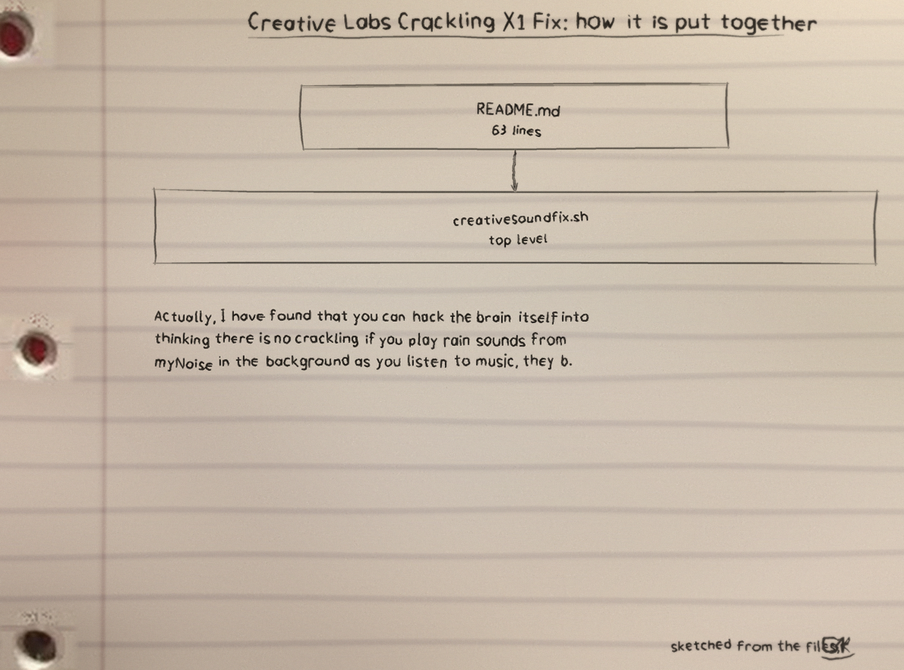
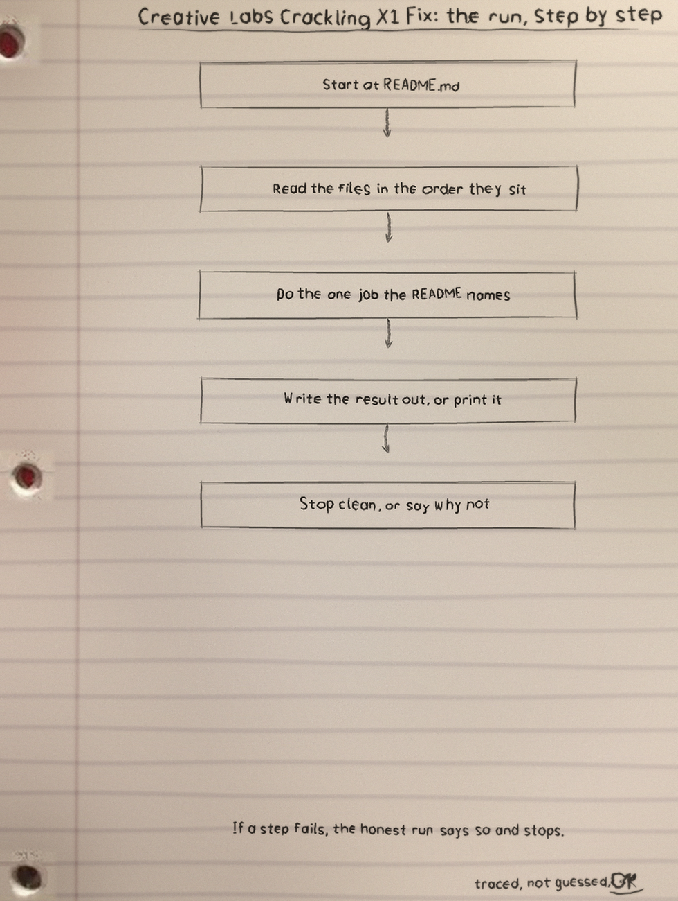
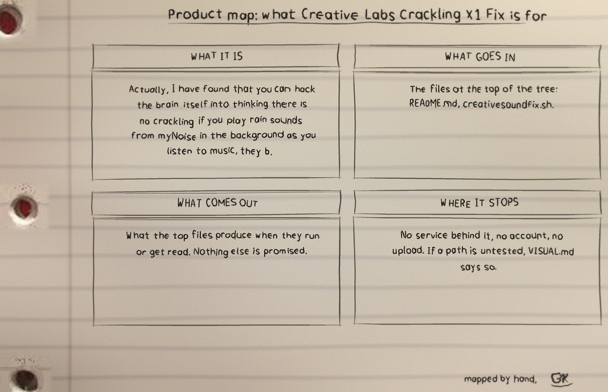

First, the cut itself
How it works: the script waits first, then kills the plugin with pkill, launchd brings the plugin back on its own, and the crackle clears. The first reset waits one full interval, so starting the script does not cut sound at once.
Second, the spacing of the stakes
Configuration: by default each wait is picked at random between 180 and 300 seconds, because a reset on an exact beat lands mid track too often. RESTART_INTERVAL_SECONDS fixes the wait, the README example uses 120, the value must be a positive whole number, invalid values exit with an error before the loop starts, and 007 is read as 7.
RESTART_INTERVAL_SECONDS=120 ./creativesoundfix.sh
Third, the undo gap in the row
Stopping is Control+C and that is the whole reversal. Warnings keep walking: no matching process prints a warning and the loop continues, a pkill failure names its status instead of pretending the plugin was missing.
Field note, tied to a stake: if a reset finds no matching process, the script prints a warning and keeps going. If pkill itself fails, the warning says so and names the status.
Fourth, rough ground
Platform limits, kept honest: macOS only, a single user machine, pkill with the f flag matches any command line containing the plugin name, and this pass was checked on Linux with bash syntax checks and stub sleep and pkill programs through test_creativesoundfix.py, not run on a Mac.
Fifth, brushwood at the end
The earlier masking workaround stays: myNoise rain and fire generators in the background, the two custom sets titled A Base Line and Ambience with their links kept, plus the targeted EQ note pushing low treble, treble, and high treble up and the rest down.
https://mynoise.net/NoiseMachines/fireNoiseGenerator.php https://mynoise.net/NoiseMachines/stormSoundGenerator.php Here is the custom set which tricks your mind: https://mynoise.net/NoiseMachines/custom.php?l=3737373737373939393900&m=FIRE7~FIRE7~FIRE7~FIRE8~FIRE8~FIRE8~FIRE9~FIRE9~FIRE9~FIRE9&orig=1&title=A%20Base%20Line Also here is a custom set I made titled Ambience: https://mynoise.net/NoiseMachines/custom.php?l=9969836856565845564500&m=FLOATING0~FLOATING1~FLOATING2~FLOATING3~FIRE7~FLOATING7~FIRE8~FLOATING8~FIRE9~FLOATING9&orig=1&title=Audioambience
Beside it, why detection was rejected: crackle sits mostly in the right earphone and looks like ordinary audio spikes, so false alarms spoil it.
Run it
The repo README has the exact commands for this one: clone it, read the top file first so you know what will happen, then run it.
$ git clone https://github.com/Epsilon0xCell/Creative-Labs-Crackling-X1-Fix.git $ cd Creative-Labs-Crackling-X1-Fix $ ./creativesoundfix.sh
The files
| File | What it is |
|---|---|
creativesoundfix.sh | The script itself: waits, kills the plugin, lets launchd raise it again. |
test_creativesoundfix.py | The test suite for this pass, run with stub sleep and pkill programs on Linux. |
README.md | The full write up: usage, configuration, warnings, platform limits, and the masking workaround. |
LICENSE | MIT license. |
The test file is new since the older snapshot of this page: the suite now sits beside the script, and the file list above replaces the old count of 2 files and 104 lines, which predates the present script.
The sheets
I sketch my projects on notebook paper so I have to understand them well enough to draw them. The full set, with the counts and how they were counted, is the Creative-Labs-Crackling-X1-Fix-Visuals folder in the repo. Nothing is drawn over the binder holes. That is a rule, not a style.


